3 Liquid handler
4 장비: JANUS
- 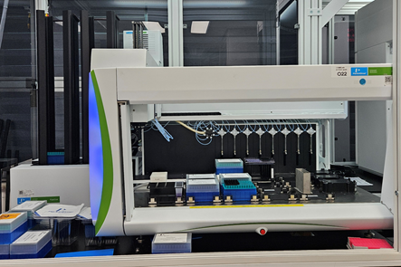
4.1 장비소개
revvity 사의 8-channel pipettes을 이용하는 liquid handler
1 - 1000 ul 의 volume range
5 ul volume: <2% CV
Unit process: Liquid transfer
- PCA & PCR mix
- Gibson assembly mix
- Yeast Transformation mix
- Enzyme reaction mix
- Enzyme assay mix
- cell spotting
다양한 labware의 사용이 가능하여 자유도가 높은 liquid handler 입니다.
Automatic stacker가 부착되어 있어 최대 10 개의 tip rack 사용이 가능합니다.
- Stacker에 사용 가능한 labware: 25 ul/175 ul tip rack
4.2 장비위치
- Fully Automation_DNA workstation housing 내에 위치
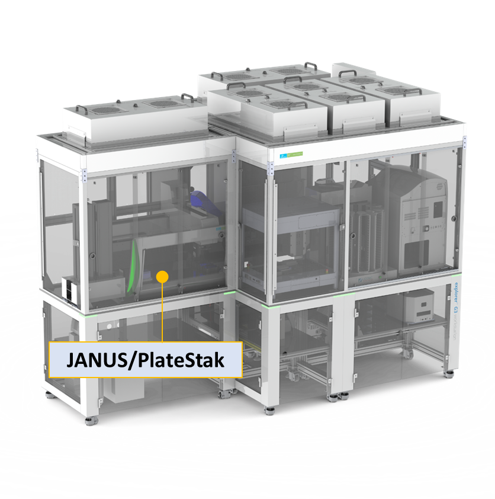
4.3 메뉴얼파일 위치
- share:\19_Equipment_장비_user’s_guide
4.4 사용법
4.4.1 사용가능한 Labware
4.4.1.1 Support: 위치를 고정하는 Tile
- Plate-Adapter Support Tile
- Plate-Adapter Solid Med Support Tile: with Robotarm
- Plate Carrier
4.4.1.2 Labware: Disposable Tips
- 25ul Conductive Filter RoboRack Tips
- 175ul Conductive Filter
- 900ul Conductive Filter Tips
4.4.1.3 Labware: plate, tube
▶ 목록 외 labware 사용 시 ’Labware setting’을 통해 추가 가능함
- 1 Well Plate
- 108 well plate
- 1536 well plate
- 384 well plate
- 384 square well: Nunc, Packard, Porvair, Costar
- 384 well clear bottom: Biocoat, Costar, Falcon, Greiner, NUNC, Packard, PE ViewPlate,
- 384 well clear bottom low volume: Greiner
- 384 well filter plate: Whatman
- 384 well flat bottom smal volume: Greiner
- 384 well PCR plate: Costar, MJResearch, Polyfiltronics
- 96 well plate
- 96 Deep Well Filter Plate: 3M Empore, Ansys, Promega, Qiagen, Varian,
- 96 Deep Well plate: BIONEER, perkinelmer-2ml, Beckman, Elkay, Axygen, Falcon-1ml, Mega, Polyfiltronics, Porvair, Qiagen, Seahorse, macrogen_oligo, Bioneer_oligo_plate
- 96 Well Clear bottom: Biocoat, Costar, Falcon, Greiner, PE ViewPlate,
- 96 well Filter Plate: Milapore, Packard, Whatman
- 96 well flat bottom: Evergreen, NUNC, Porvair, Costar
- 96 well PCR plate: BioRad, eppendorf, eppendorf_on_ice_rack, SSIBIO, SSIBIO_on_ice_rack
- 96 well PCR rack: KRIBB, perkinelmer, 0.2ml_8-strips_tube
- 96 well round: Costar, Corning, Falcon
- V-bottom plate: perkinelmer_V-bottom_Shortplate, Greiner
- Big well plate
- 12 big well: Evergreen
- 24 big well: Evergreen, Packard
- BioTx
- Drug Transport (Caco-2) Plates
- Microfug
- KRIBB_24Pos_Tube
- KRIBB_2ml_Tube
- Vials
- 2ml_vial_32pos
4.4.1.4 Labware: Reservoirs
▶ Reagent 분주 시 reaction 수에 따라 적정 용량의 reservoir 를 사용하면 protocol 시간을 단축할 수 있습니다.
| Reservoir | 2 trough+ 2 trough | 24 well (deep) | 48 well | Washbowl + 1 trough | Washbowl + 2 trough | 4 well | 8 row | 12 column | 12 column (low profile) | 1 well |
|---|---|---|---|---|---|---|---|---|---|---|
| Well | 4 | 24 | 48 | 1 | 2 | 4 | 8 | 12 | 12 | 1 |
| volume | 60 ml | 10 ml | 5 ml/7.5 ml | 73 ml | 21 ml | 287 ml | ||||
| Part no. | N07777236 | N0777237 ,N0777238 | 600 8710 | 600 8700 | 600 8730 |
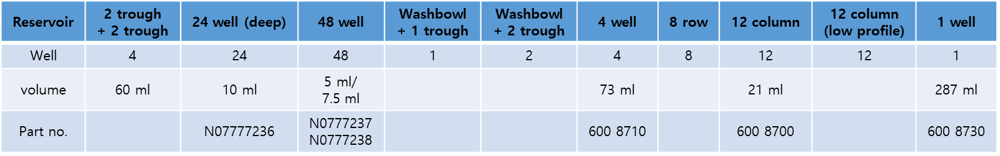
4.4.2 프로토콜 만들기
4.4.2.1 Labware setting
목록에 없는 새로운 labware를 사용하거나 기존 세팅 값이 맞지 않을 경우 진행
Q. Labware parameter
- Parameter window 에서 Support: Plate-Adapter support Tile(기본) 체크
- 8-channel pipet의 간격이 9.0 mm로 well 간격이 9.0 mm 이하로 설정되면 1 channel씩 움직이게 되어 시간이 오래 소요될 수 있음.
- First well, first column: X,Y 축 위치 조정
- Last well, last column: X,Y 축 위치 조정
- Z축을 labware 위쪽으로 약 5 cm 올린 뒤 tip 하나 손으로 꽂아서 Z 축 내려가며 bottom 위치 측정
- step size 0.7 로 조정하면 천천히, 힘이 과하게 강해질 경우 motor가 고장 날 수 있음.
- 바닥에 닿으면 UP 두 번 올려서 Z 축 value 확인
- Z value – 39.8 (Tip 길이) = 수치 확인, Detail tap의 well bottom에 기입
- Tip을 사용하지 않았을 경우 Z value 그대로 적용
- 8개의 tip adapter 녹색 봉의 휘어짐 정도가 다름, Tip을 사용한 well bottom 측정이 좀 더 정확함
- Tip 제거 후 녹색 봉이 labware 상단에서 X축 이동하는데 방해되지 않는 높이로 측정
- Top of well, search height 값도 동일하게 업데이트
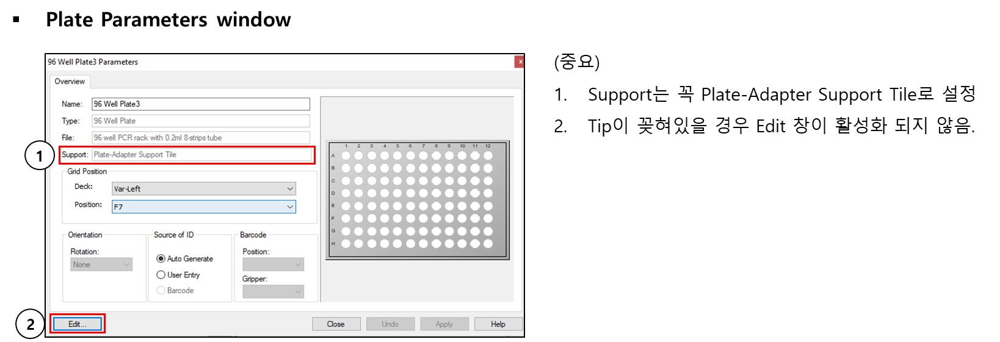
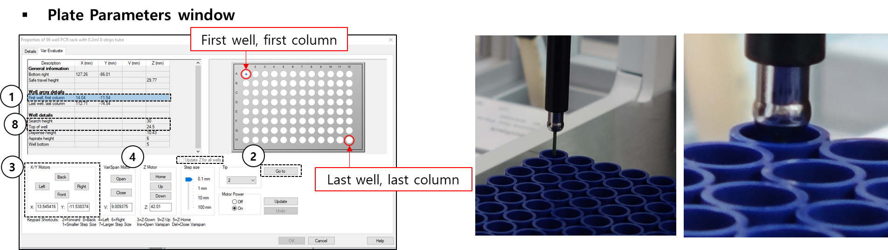
- First well, first column 선택, Tip은 보통 2번을 사용
- Go to 를 눌러 A1으로 위치
- 녹색 봉이 well 중앙에 위치할 수 있도록 X/Y Motors 를 조정 (중앙 확인이 어려울 경우 Z Motor를 내려서 (Down) 조정
- X/Y Motors 조정 시 Step size는 0.1 mm 권장
- Well 중앙에 위치했다면 Z Motor: Up을 이용해 plate에서 약 5 cm 정도 위로 올려줌
- Tip을 하나 손으로 끼운 후 Step size는 0.7 mm로 Z Motor를 내려가며 바닥을 확인
- 바닥에 닿으면 위로 두 번 올린 후 Z 수치에서 39.8을 뺀 값을 Detail tap의 well bottom에 기입→ Well bottom도 자동 업데이트됨
- Top of well 선택, Z Motor를 위로 올려 Tip을 제거, 녹색 봉이 plate 상단에서 X/Y로 움직일 수 있을 정도로 수치 조정 후 Update Z for all wells 체크, Update 실행, Search height 값도 동일하게 업데이트
4.4.2.2 Base Layout
[Layout_Template_1.MPT] 파일을 열어 ’다른 이름으로 저장’하여 작성.
Plate Carrier, Tip waste, Flush/Wash, Robot Arm 위치는 고정으로 변경할 수 없음. (하드웨어 상의 고정 위치)
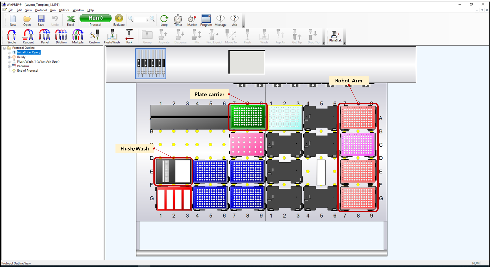
4.4.2.3 Plate Deck 사용 시 주의할 점
4.4.2.4 Performance file
pipetting 동작 관련된 옵션을 조정할 수 있는 파일
사용하려는 reagent의 특성에 따라 세밀하게 조정할 수 있음 (viscosity, bubble 주의 등)
Aspirate/Dispense speed:
Aspirate/Dispense delay:
Waste volum e:
Blowout volume:
Air Gap:
1개의 source에서 여러 well로 동일하게 분주할 경우 repeat dispense를 하면 tip 사용량을 줄이고 빠르게 진행할 수 있음
- 다만 마지막 well의 분주양이 부족하다면 performance file 중 aspiration volume 구간에서 ‘waste volume’ 을 넣어주면 해결 가능
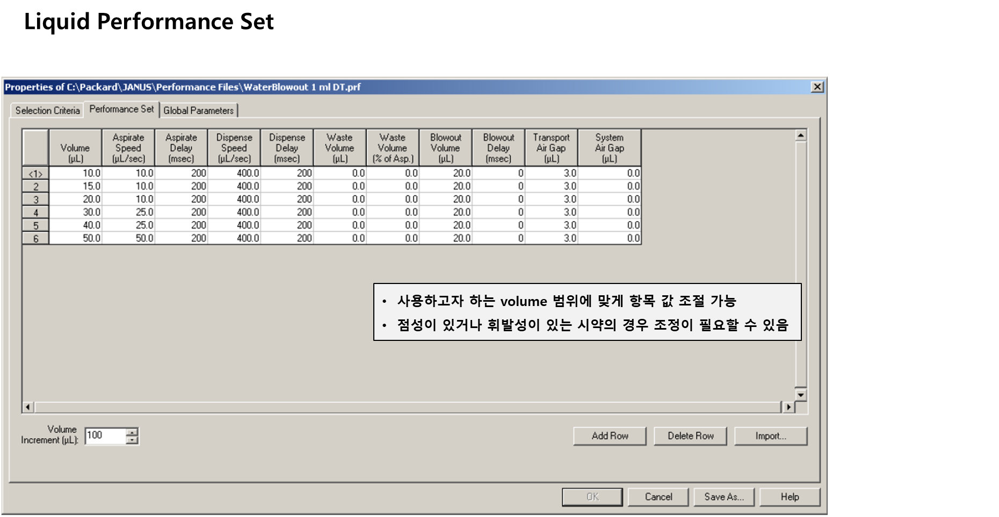
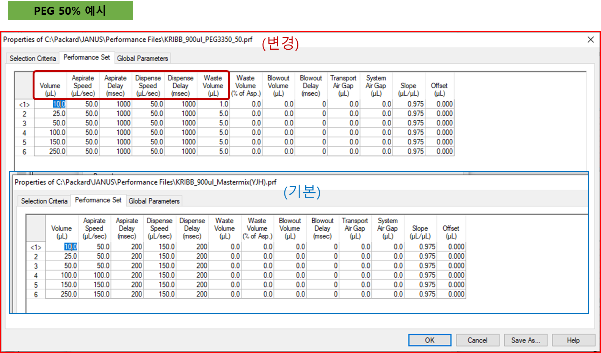
4.4.2.4.1 Tip 사용갯수 조절하는 방법
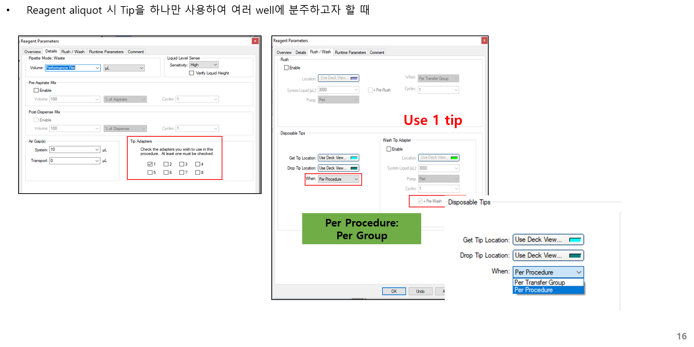
4.4.3 Source well의 V-bottom 사용 시 주의할 점
1.5 mL Eppendorf tube에서 reagent 를 옮길 때에는 Liquid Tracking을 150% 로 조정한다.
Tube의 모양이 V-bottom 이어서 aspiration 시 tube가 딸려올 수 있음

4.4.3.1 분주 시 reagent가 분주되지 않고 다음 well에 같이 분주되는 경우
- Reagent 분주 시 볼륨이 작을 경우 tip 끝에 맺혀서 모든 용액이 다 분주 되지 않을 수 있음.
- Manual로 분주하고자 하는 볼륨이 분주 되었을 때 bottom에서의 높이를 체크
- Dispense Height 를 ’mm Above Well Bottom’으로 선택하여 수치 기입
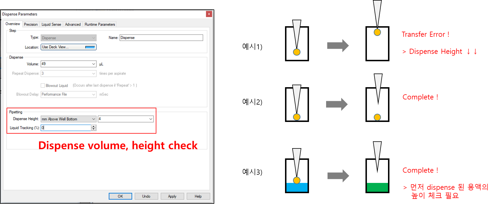
4.4.3.2 같은 동작 사용 시 n차 시 반응 수가 다를 때
Number of Executions:
Var: Ask User
프로토콜 구동 시 입력된 숫자로 구동
Deck 에서 mapping 하고 반응 수가 일정하지 않을 경우 권장
ex) Master mix 분주할 때 오늘은 80 ea, 내일은 96 ea ,,
Var: Calculate
- 사용 x
Var: Select
사용 x
File: Keyword
- csv 파일 적용 시 불러오기 옵션
File: Column
- csv 파일 적용 시 불러오기 옵션
File: Records
- csv파일로 mapping 시 선택 (가장 자주 사용)
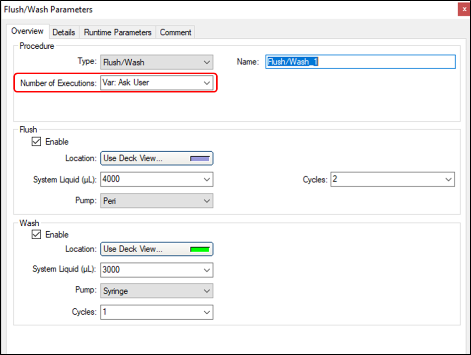
5 장비: OT-2
5.1 장비소개
5.1.1 장비설명
5.1.2 장비위치
5.2 메뉴얼파일 위치
5.3 사용법
6 장비: Notable
6.1 장비소개
6.1.1 장비설명
6.1.2 장비위치
6.2 메뉴얼파일 위치
6.3 사용법
7 장비: ATS
7.1 장비소개
7.1.1 장비설명
7.1.2 장비위치
7.2 메뉴얼파일 위치
7.3 사용법
8 장비: Zephyr

8.1 장비소개
Automated NGS Library preparation system
96-channel pipettes: 1-200 uL
1-5 uL volume: <5% CV
5-200 uL: <2% CV
4-70 ℃ thermal heater and shaker
Magnetic plate for DNA purification with magnetic bead
96 well plate/384 well plate
8.1.1 장비설명
8.1.2 장비위치
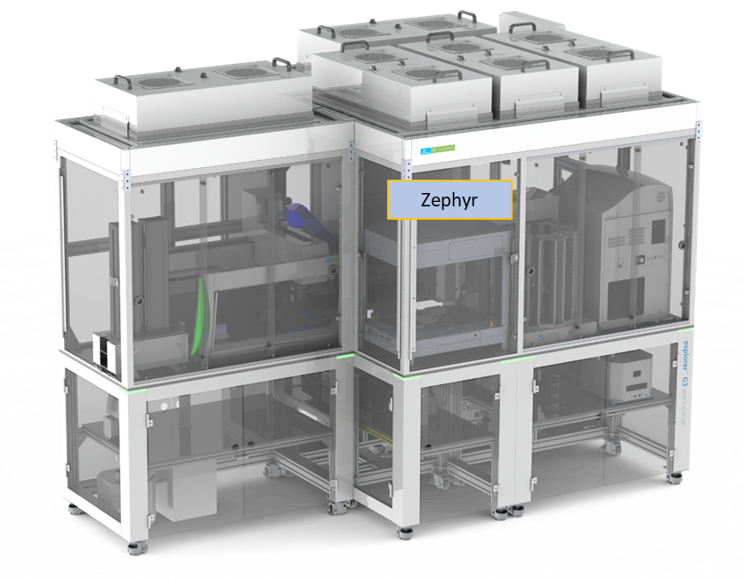
8.2 메뉴얼파일 위치
hare:\19_Equipment_장비_user’s_guide
8.3 사용법
8.3.1 Unit operation: NGS sample preparation
8.3.1.1 시약
- Nanopore sequencing Kit
8.3.1.2 준비물
- 시작물질: barcodePCR 반응액
8.3.1.3 프로토콜
- Nanopore pooling
8.3.2 Unit operation: PCR fragment purification
8.3.2.1 시약
- MagListo 5M PCR purification Kit (Bioneer)
8.3.2.2 준비물
시작물질: 96 well PCR plate에 담긴 PCR 반응액
96-well storplate - 3 ea
96-well PCR plate - 3 ea
Lid cover - 1 ea
96-deep well 2 ml - 1 ea (re-use)
Zephyr 200 ul Filter tip - 2 rack
8.3.2.3 실험비용
- 키트 + 세팅비 = 96 rxn 기준, 151,087 원
| 1 rxn | 96 rxn | cost | |
|---|---|---|---|
| MagListo™ PCR/Gel Purification Kit | 1 ea | 1 ea | 72,600 |
| Hard-Shell PCR plate-96, full skirt | 3 ea | 3 ea | 6,248 |
| StorPlate-96 V, 450 μL/well, 96-well /50 | 3 ea | 3 ea | 8,646 |
| Zephyr 200 | 2 ea | 192 ea | 40,700 |
| 128,194 |
| 사용개수 | 단가 | 비용 | |
| 25ml Disposable Reservoirs, Sterile | 3 | 972 | 2,917 |
| 100ml Disposable Reservoirs, Sterile | 2 | 972 | 1,945 |
| 1250 ul, INTEGRA | 40 | 54.78 | 2,191 |
| 22,893 |
8.3.2.4 Labware Location
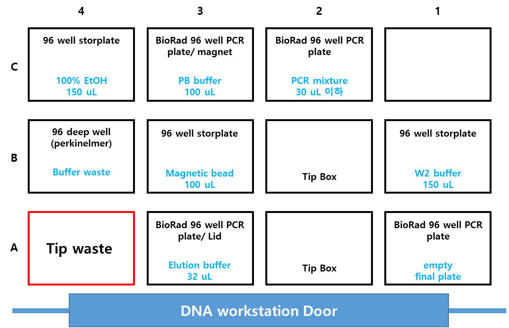
8.3.2.5 프로토콜
- Purification1: running time 46 min ± 2 min
8.3.3 Unit operation: Size selection
8.3.3.1 시약
- SPRIselect bead (Beckman)
8.3.3.2 준비물
- 시작물질: pcr product mixture
8.3.3.3 실험비용
- SPRIselect bead 구매 규격에 따라 319,932 에서 154,064로 낮출 수 있음
| 1 rxn | 96 rxn | 단가 | 96 cost | |
|---|---|---|---|---|
| SPRIselect reagent 5ml | 1 | 96 | 2,032 | 195,096 |
| Hard-Shell PCR plate-96, full skirt | 3 | 3 | 6,248 | 18,744 |
| Zephyr 200 | 4 | 384 | 212 | 81,400 |
| 25ml Disposable Reservoirs, Sterile | 3 | 3 | 972 | 2,916 |
| 1250 ul, INTEGRA | 2 | 16 | 54.78 | 876 |
| 1 well reservoir | 1 | 1 | 20,900 | 20,900 |
| 합계 | 319,932 | |||
| SPRIselect reagent 60 ml | 1 | 96 | 552 | 52,963 |
| 합계 | 177,799 | |||
| SPRIselect reagent 450 ml | 1 | 96 | 304 | 29,227 |
| 합계 | 154,064 |
8.3.3.4 Labware location

8.3.3.5 프로토콜
- PCR mixture + Magnetic bead, mix (Bead resuspension 필요)-10번 mix
- RT에서 1 분간 방치
- Magnet 으로 옮겨서 supernatant 제거
- 3)에 180 μL EtOH 넣고 30초 방치
- Supernatant 제거
- DW or TE buffer 40 uL, 10번 mix or vortexing 1 min
- RT에서 1 분간 방치
- Magnet으로 옮겨서 new plate에 supernatant 취득
8.3.4 Unit operation: E. coli Transformation
8.3.4.1 시약
comp. cell
recovery broth
8.3.4.2 준비물
DNA plate, 2-5 ul / 96 well PCR plate
Comp. cell plate, 30 ul / 96 well PCR plate
recovery broth, 15 ml / PP V-bottom reservoir
Agar tray plate, 1 ea
Zephyr Tip, 2 box
Universal Clear Lid, 2 ea
8.3.4.3 실험비용
| Zephyr | 구매단가 | 1 rxn 사용 | 총 비용 | 96 rxn | 총비용 |
|---|---|---|---|---|---|
| Tray plate | 1,186 | 1 | 1,186 | 1 | 1,186 |
| Zephyr, 200 | 212 | 2 | 424 | 192 | 40,700 |
| PP reservoir, 287 ml, V-bottom | 20,900 | 1 | 20,900 | 1 | 20,900 |
| Universal Clear Lids | 4,466 | 2 | 8,932 | 2 | 8,932 |
| Hard-Shell PCR plate-96, full skirt | 6,248 | 2 | 12,496 | 2 | 12,496 |
| 43,938 | 84,214 |
| Manual | 구매단가 | 1 rxn 사용 | 총 비용 | 96 rxn | 총비용 |
|---|---|---|---|---|---|
| petri dish | 118.8 | 1 | 118.8 | 96 | 11,405 |
| SPREADER | 166.2 | 1 | 166.2 | 96 | 15,959 |
| Manual Tip, 1000 | 100.8 | 2 | 201.7 | 192 | 19,360 |
| Manual Tip, 200 | 100.8 | 2 | 201.7 | 192 | 19,360 |
| 1.5 ml tube | 33 | 1 | 33 | 96 | 3,168 |
| 721.4 | 69,252 |
8.3.4.4 Labware Location
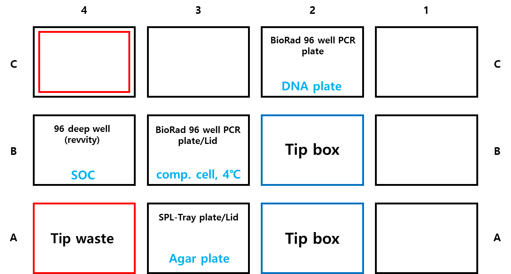
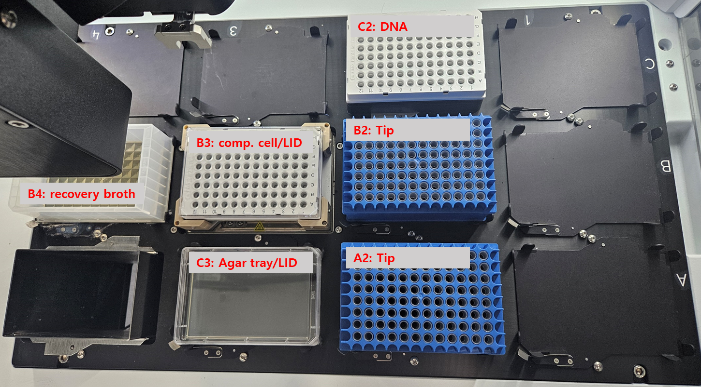
8.3.4.5 프로토콜
- Running Time: 2 hours
8.3.5 Unit operation: Plasmid Extraction
8.3.5.1 시약
- Wizard MagneSil Plasmid Purifiaction System (Promega)
8.3.5.2 준비물
Deep well plate 용 shaker 추가 설치 필요
- 2024-06월 현재 Zephyr에 설치된 shaker는 2mm orbital, 96-well PCR plate용으로 deep well plate 을 사용하게 되면 제대로 docking 되지 않아 rpm을 낮게 설정해야함. 낮은 rpm 값은 bead binding 과 washing, elution에 영향을 미쳐 효율이 좋지 않을 수 있음.
96 well magnetic rod 추가 구매 필요
- Zephyr에 설치된 magnetic plate는 ’Ring magnet’으로 liquid handler 이용 시 bead loss 가 발생할 수 있어 ’4 point post Magnet’을 권장함

8.3.5.3 프로토콜
8.3.6 Unit operation: Protein purification
8.3.6.1 시약
- Affinity magnetic bead
8.3.6.2 준비물
- 시작물질: cell lysate - tagged protein